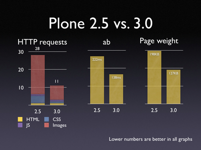

Blog
PDF View in Plone with z3c.rml
Use z3c.rml to add a PDF view in Plone: http://pypi.python.org/pypi/z3c.rml
First you add the z3c.rml package to the eggs section in your buildout.cfg:
# Add additional eggs here
# elementtree is required by Plone
eggs =
z3c.rml
Next you write a new view class for the PDF view. A nifty way is to subclass the view class already in use for the (standard html) view
from zope.app.pagetemplate.viewpagetemplatefile import ViewPageTemplateFile
from z3c.rml.rml2pdf import parseString
class NiceViewPDF(NiceView):
def __call__(self):
self.request.response.setHeader('content-type', 'application/pdf')
rml_doc = ViewPageTemplateFile('templates/nice_view_pdf.pt')(self)
return parseString(rml_doc.encode('utf-8')).read()
The last thing you need is a 'nice_view_pdf.pt' template file.
<?xml version="1.0" encoding="UTF-8" ?>
<!DOCTYPE document SYSTEM "http://www.reportlab.com/docs/rml.dtd">
<document filename="template.pdf"
xmlns:tal="http://xml.zope.org/namespaces/tal"
xmlns:i18n="http://xml.zope.org/namespaces/i18n"
i18n:domain="mydomain">
<template pageSize="A4" author="www.seantis.ch" title="Title">
<pageTemplate id="main">
<frame id="first" x1="72" y1="70" width="451" height="600"/>
</pageTemplate>
</template>
<story>
<h1 tal:content="python: context.Title()">Title</h1>
</story>
</document>
(example from: http://svn.zope.org/z3c.rml/trunk/src/z3c/rml/tests/input/)
"RML Reference": http://svn.zope.org/z3c.rml/trunk/src/z3c/rml/rml- reference.pdf?view=auto
Plone 3.0 :: Screendesign
In der Version 3.0 bekommt das CMS Plone eine komplett überarbeitete visuelle Oberfläche. Mittlerweile sind die ersten Screenshots veröffentlich und es zeigt sich, dass sich das neue Design Richtung „web 2.0“ entwickelt. Sieht doch echt cool aus…
Release Date für Plone 3.0 ist voraussichtlich der 10. Mai 2007.
Plone 3.0 Buch
Martin Aspeli - sicher einer der grossen Plone-Insider - hat ein Buch über die Entwicklung von Webapplikationen mit Plone 3.0 geschrieben.
Das Werk heisst "Professional Plone Development" und ist bei Packt Publishing erschienen: http://www.packtpub.com/Professional-Plone-web-applications- CMS/book
"This book aims to teach best practices of Plone development, focusing on Plone 3.0. It covers setting up a suitable development environment, customizing Plone’s look and feel, creating new content types and forms, connecting to external databases, and managing users and groups intelligently. It also shows how to configure a production-ready server, with LDAP authentication and caching.
- How to set up a suitable development environment
- The importance of automated testing of any code you write
- How to perform Plone customizations in a manageable, re-usable fashion
- Techniques for branding Plone and changing its look and feel
- How to safely install and manage third-party add-on components
- How to create your own content types
- How to create new forms and templates
- Ways of interacting with external relational databases
- Techniques for managing users and custom user metadata
- Using Plone’s new AJAX framework to build dynamic user interfaces
- How to set up Zope and Plone in a production environment
- How to connect to an LDAP/Active Directory repository for authentication
- How to configure a caching proxy to improve Plone's performance"
Plone 3.0 Performance
Weitere good news zum kommenden Plone Release: Performance-Tests zeigen signifikante Verbesserungen gegenüber der aktuellen Version 2.5. Die Anzahl HTTP requests für das Rendering einer Page konnte halbiert werden. Auch im Backend kommt es dank des Einsatzes von AJAX zu einer Verbesserung der Performance.

Die Benchmark-Tests wurden alle ohne vorgestellte Caching-Proxy oder Webserver durchgeführt; d.h. in einer Hosting-Umgebung mit Proxy und Apache ist eine Plone-Site im Livebetrieb noch um ein vielfaches performanter. http://limi.net/articles/some-preliminary-plone-3.0-benchmark- results
Plone for PHPers
"Graduating from Spaghetti to Sushi: Plone for PHPers" ist eine Präsentation von Sean Kelly (seantisBlog) die PHP-Programmierern den Umstieg auf Plone nahe legen soll. Nach Sean heisst das Spaghetti hinter sich zu lassen um den Stil sowie die Eleganz von Sushi zu geniessen.
Wieder einmal ist die Präsentation ganz witzig anzuschauen und es gibt einiges zu lernen. Nebenbei erfährt man auch gleich noch, dass Sean zuhause seine DVD- Sammlung mittels einer Datenbanklösung in Plone verwaltet...
http://www.archive.org/details/plone2006-from-spaghetti-to-sushi